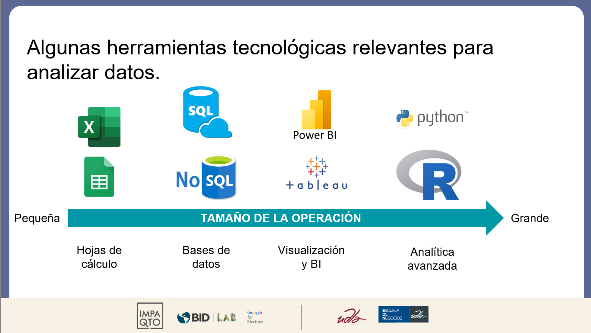

UNIDAD 1: Introducción a la programación y bases de datos.#
Primero algunas definiciones#
¿Qué es una base de datos?
Es una herramienta para recopilar y organizar información. Las bases de datos pueden almacenar información sobre personas, productos, pedidos u otras cosas. Muchas bases de datos comienzan como una lista en una hoja de cálculo o en un programa de procesamiento de texto. A medida que la lista aumenta su tamaño, empiezan a aparecer redundancias e inconsistencias en los datos. Cada vez es más difícil comprender los datos en forma de lista y los métodos de búsqueda o extracción de subconjuntos de datos para revisión son limitados. Una vez que estos problemas comienzan a aparecer, una buena idea es transferir los datos a una base de datos creada con un sistema de administración de bases de datos (DBMS), como Access, MySQL, SQL Server, MariaDB.

¿Qué es programar?
La programación, o codificación, es el proceso de emitir una serie de órdenes que un ordenador puede entender y ejecutar para realizar una tarea. Hoy en día, casi todas las investigaciones con algún aspecto cuantitativo implican programación.
Imaginemos que un ordenador es como un genio especialmente travieso: si nuestras instrucciones no son totalmente inequívocas, el ordenador no hará lo que le pedimos. Por eso escribimos nuestro código, nuestra lista de instrucciones para el ordenador, de forma muy explícita, para asegurarnos de que escribimos lo que queríamos decir y de que el ordenador lo hará de la forma prevista. Pero, al igual que un genio, si consigues que las instrucciones sean las correctas, puedes crear cosas mágicas (Turrell, 2022).

1.1. Introducción a los datos y su importancia#
En los últimos años, la ciencia de los datos se ha convertido en una herramienta de negocios esencial. El acceso a cantidades masivas de datos —gracias a la informática avanzada y el “internet de las cosas”— permite que hoy en día las empresas puedan medir todos los aspectos de sus operaciones hasta el más mínimo detalle. Pero muchos directores de empresa, desbordados por el continuo aluvión de indicadores, vacilan en implicarse en un proceso que consideran de índole técnica.
A quién le cabe en la cabeza que un director de finanzas vaya al director ejecutivo y le diga:
“Yo francamente no sé cómo leer un balance, pero tengo a alguien en mi equipo que lo sabe hacer muy bien”
Lo echaríamos de la sala a carcajadas. Y sin embargo, yo conozco cantidad de gente en otras disciplinas, como por ejemplo, el marketing, que, sin pensarlo dos veces, irían al director ejecutivo y le dirían:
“Esto de la analítica es muy complicado. No lo entiendo del todo. Pero he reunido un equipo de auténticos genios de la analítica que nos van a propulsar al siguiente nivel”.
Yo creo que ésta es una respuesta que ya no es aceptable.
Tomado de: https://insight.kellogg.northwestern.edu/es/article/a-leaders-guide-to-data-analytics
En resumen, saber como manejar datos mediante la programación nos permite:
Automatizar procesos: realizar el trabajo de varias personas en unas cuantas (a veces muchas) líneas de código.
Modelar: abstraer un fenómeno del mundo real en una expresión matemática/estadística que nos permita entender y predecir dicho fenómeno.
Predecir: a partir del modelo, podemos generar proyecciones que nos ayuden a maximizar un beneficio o minimizar un riesgo.
Además, los lenguajes que aprenderemos se encuentran entre los más demandados.

Tomado de: Stack Overflow
Veamos un ejemplo#
Se estima que hoy en día la cantidad de datos que el mundo genera es de al rededor de 23 zettabytes!
¿Qué es un zettabyte?
Imaginemos que deseamos hacer un breve reporte de la tendencia de la cantidad de datos generados en los últimos años, generar un modelo que se ajuste a las observaciones, predecir lo que sucederá hasta el 2027, enviar un boletín a una lista de destinatarios.
Por ahora, no se enfoquen en el código, solo en el proceso.
Inicializamos nuestro ambiente
import pandas as pd
import numpy as np
import requests
import win32com.client as win32
import matplotlib.pyplot as plt
import seaborn as sns
sns.set()
Extracción de datos (webscrapping)
url = requests.get('https://explodingtopics.com/blog/data-generated-per-day')
df = pd.read_html(url.text)[1][[0,1]]
df.columns = df.iloc[0]
df = df.iloc[1:]
df
| Year | Data Generated | |
|---|---|---|
| 1 | 2010 | 2 zettabytes |
| 2 | 2011 | 5 zettabytes |
| 3 | 2012 | 6.5 zettabytes |
| 4 | 2013 | 9 zettabytes |
| 5 | 2014 | 12.5 zettabytes |
| 6 | 2015 | 15.5 zettabytes |
| 7 | 2016 | 18 zettabytes |
| 8 | 2017 | 26 zettabytes |
| 9 | 2018* | 33 zettabytes |
| 10 | 2019* | 41 zettabytes |
| 11 | 2020* | 64.2 zettabytes |
| 12 | 2021* | 79 zettabytes |
| 13 | 2022* | 97 zettabytes |
| 14 | 2023* | 120 zettabytes |
| 15 | 2024* | 147 zettabytes |
| 16 | 2025* | 181 zettabytes |
Limpieza de datos
df['Year'] = df['Year'].str[0:4].astype(int)
df = df[df['Year'] <= 2023]
df['Data Generated'] = df['Data Generated'].str.split(' ', expand=True)[0].astype(float)
df.set_index('Year', inplace=True, drop=True)
C:\Users\Alejo\AppData\Local\Temp\ipykernel_10552\2687451052.py:3: SettingWithCopyWarning:
A value is trying to be set on a copy of a slice from a DataFrame.
Try using .loc[row_indexer,col_indexer] = value instead
See the caveats in the documentation: https://pandas.pydata.org/pandas-docs/stable/user_guide/indexing.html#returning-a-view-versus-a-copy
df['Data Generated'] = df['Data Generated'].str.split(' ', expand=True)[0].astype(float)
Análisis exploratorio
df
| Data Generated | |
|---|---|
| Year | |
| 2010 | 2.0 |
| 2011 | 5.0 |
| 2012 | 6.5 |
| 2013 | 9.0 |
| 2014 | 12.5 |
| 2015 | 15.5 |
| 2016 | 18.0 |
| 2017 | 26.0 |
| 2018 | 33.0 |
| 2019 | 41.0 |
| 2020 | 64.2 |
| 2021 | 79.0 |
| 2022 | 97.0 |
| 2023 | 120.0 |
df.plot.area(alpha=0.5)
plt.ylabel('Data Generated (ZettaBytes)')
plt.legend(title='')
plt.show()
Modelamiento
# fit line to data
x = df.index.values
y = df['Data Generated'].values
m, b = np.polyfit(x, np.log(y), 1)
# plot data
df.plot.area(alpha=0.5)
plt.ylabel('Data Generated (ZettaBytes)')
plt.legend(title='')
x_pred = np.arange(2010, 2029)
y_pred = np.exp(m*x_pred + b)
df_pred = pd.DataFrame({'Fcst': y_pred}, index=x_pred)
df_pred = df.merge(df_pred, how='outer', left_index=True, right_index=True)
plt.plot(x_pred, y_pred, label='Fit', linestyle='--')
plt.xticks(np.arange(2010, 2029, 2), rotation=45)
plt.ylim(0, 600)
plt.savefig('./images/data_generated_fit.png', dpi=100)
plt.show()
Reportería (BI)
mail = win32.Dispatch('outlook.application').CreateItem(0)
mail.Bcc = open('listado.txt').read().replace('\n', '; ')
mail.Subject = f'Cantidad de datos generados por año'
mail.HTMLBody = fr'''
<html> <head></head><body>
Hola tod@s, <br>
<p>Les comparto la cantidad de datos generados por año:</p> <br>
{df_pred.reset_index().to_html(index=False)}<br>
<img src="https://raw.githubusercontent.com/alejo-acosta/pmdb-material/master/images/data_generated_fit.png">
<br>
Fuente: <a href="https://explodingtopics.com/blog/data-generated-per-day">Exploding Topics</a>
<br><p>Saludos,</p>
<p>Alejo</p></body></html>
'''
if True: mail.Send()
1.2. Elementos de una base de datos#
Primero, algunas definiciones más técnicas sobre una base de datos:

Nota: APP=application, API=application programming interface.
Tomado de: csestack.
Tabla: es análogo a una hoja de cálculo ya que los datos se almacenan en filas y columnas.
Las filas, también llamados registros, representan la unidad de observación de la cual queremos almacenar información.
Las columnas, también llamados campos, representan las características de dicha unidad de observación. Cada campo solo podrá contener un tipo de datos y usualmente uno (o más campos) representan una clave principal, es decir un identificador único que no podrá repetirse.
Tipos de datos más comunes#
INT, TINYINT, BIGINT: Número entero.
FLOAT: Número decimal.
CHAR, VARCHAR, TEXT, STR: texto (string).
BINARY, BIT: variable dicotómica (0/1).
DATE, TIME: fecha u hora.
Formulario: es la interfaz mediante la cual se ingresan los datos.
Informe: se usan para dar formato a los datos, resumirlos y presentarlos.
Vista: es una tabla virtual, no existe físicamente dentro de la base de datos.
Consulta: sirven para realizar muchas funciones en una base de datos. La más común es recuperar datos específicos de las tablas.
Tomado de: Conceptos básicos sobre bases de datos.
Ejercicio: identifiquemos algunos de los elementos revisados para los siguientes casos.
Una base de datos de clientes.
Una base de datos de facturación.
Una base de datos notas de alumnos.
1.3. Introducción al lenguaje de consultas SQL#
En éste punto, vamos a comenzar a programar. Para ello usaremos una herramienta en línea www.sql-practice.com.
Otro recurso valioso para aprender el lenguaje es w3schools.
SQL (standard query language) es un lenguaje para almacenar, manipular y recuperar datos en bases de datos.
A pesar de que es un lenguaje “estándar” existen variantes que a veces complican, el que veremos aquí aprenderemos la variante más común que sirve en: MySQL, SQL Server, MS Access, Oracle, Sybase, Informix, Postgres.
1.4. Sintaxis básica de SQL para consultas#
La sintaxis básica de SQL para realizar consultas tiene 6 elementos:
SELECT campo_1, campo_2, campo_3
FROM tabla_1
JOIN tabla_2
WHERE condición_1, condición_2, condición_3
GROUP BY grupo_1, grupo_2, grupo_3
ORDER BY columna_1, columna_2, columna_3
De los cuales los dos primeros son imprescindibles. No puede haber una consulta sin un SELECT y un FROM.
SQL es indiferente a mayúsculas y minúsculas (case insensitive)
Se puede usar un * para seleccionar todos los campos, y el comando LIMIT para seleccionar los n primeros registros.
SELECT *
FROM tabla_1
LIMIT 10
Veamos algunos ejemplos utilizando la base de hospitales en www.sql-practice.com.
Seleccionar los 10 primeros pacientes:
SELECT *
FROM patients
LIMIT 10
Seleccionar los 10 primeros pacientes de género masculino:
SELECT * FROM patients WHERE gender='M' LIMIT 10
Seleccionar los 10 primeros pacientes que pesan entre 100 y 120:
SELECT * FROM patients WHERE weight>=100 AND weight<=120 LIMIT 10
Seleccionar solo campos específicos:
SELECT patient_id, first_name, last_name FROM patients LIMIT 10
Usar aliases para las columnas:
SELECT
patient_id AS identificación,
first_name AS nombre,
last_name AS apellido
FROM patients
LIMIT 10
Podemos resumir las tablas con algunos comandos, por ejemplo:
Seleccionar elementos únicos:
SELECT DISTINCT city FROM patients
Realizar operaciones aritméticas:
SELECT
*,
weight/POWER(height,2)*10000 AS bmi
FROM patients
Realizar cálculos con columnas
SELECT COUNT(first_name) FROM patients
SELECT AVG(height) FROM patients
Todo ésto se puede hacer agrupando por algun campo:
SELECT gender, avg(height) from patients group by gender
Unir texto:
SELECT
CONCAT(first_name, ' ', last_name) as nombre_completo
FROM patients
LIMIT 10
Extraer pedazos de texto:
SELECT
SUBSTRING(first_name, 1, 1) as inicial_nombre,
SUBSTRING(last_name, 1, 1) as inicial_apellido
FROM patients
LIMIT 10
También se puede hacer una consulta dentro de otra consulta:
SELECT first_name, last_name, height
FROM patients
WHERE height = (SELECT MAX(height) FROM patients)
Ejercicios consulta SQL#
Seleccionar nombres únicos que comiencen con la letra “C”.
Seleccionar a la persona con mayor peso.
Obtener una altura promedio por ciudad y ordenarlo.
¿Cuál es la proporción de pacientes alérgicos?